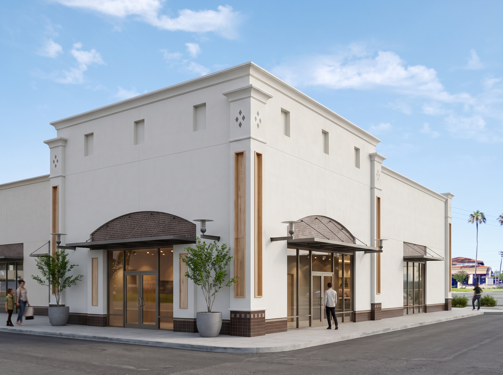

01 / IDENTITY
CHANG
YA-LIN
INTERIOR DESIGNER
+ SPATIAL DESIGNER
GLASGOW, UK

02 / SELECTED WORK
Two real projects
in space and material.
03 / HOW I WORK
A considered route from question to place.
I use research, spatial planning and material thinking to make environments that are clear, generous and specific to the people who inhabit them.
Spatial planningConcept developmentDesign developmentMaterial researchTechnical drawing3D modelling
[PROCESS IMAGE / DRAWING]
04 / EXPERIENCE
Professional experience
[YEAR–YEAR][ROLE][STUDIO / COMPANY]
[LOCATION]
[LOCATION]
[YEAR–YEAR][ROLE][STUDIO / COMPANY]
[LOCATION]
[LOCATION]
05 / ABOUT
Interior designer,
spatial thinker.
I am an interior designer based in Glasgow, with professional experience in Taiwan and an MDes Interior Design background from The Glasgow School of Art.
Read more